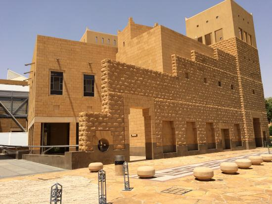
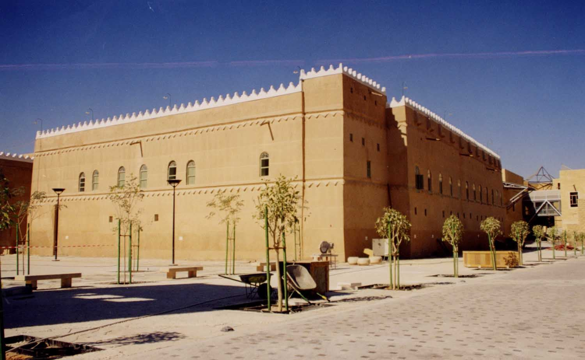
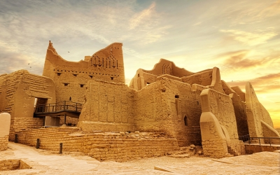
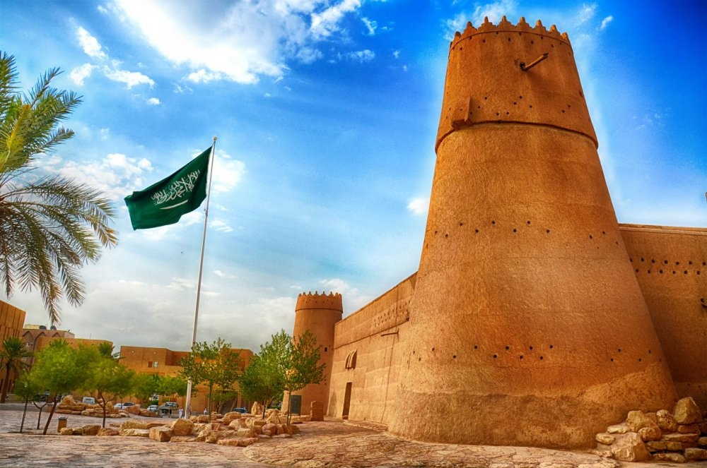
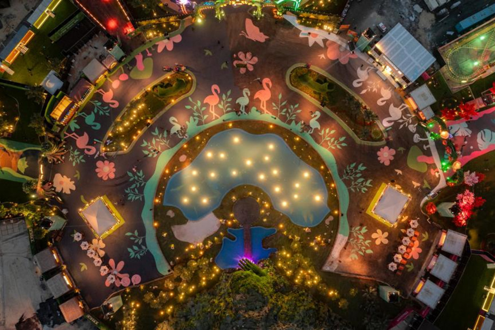
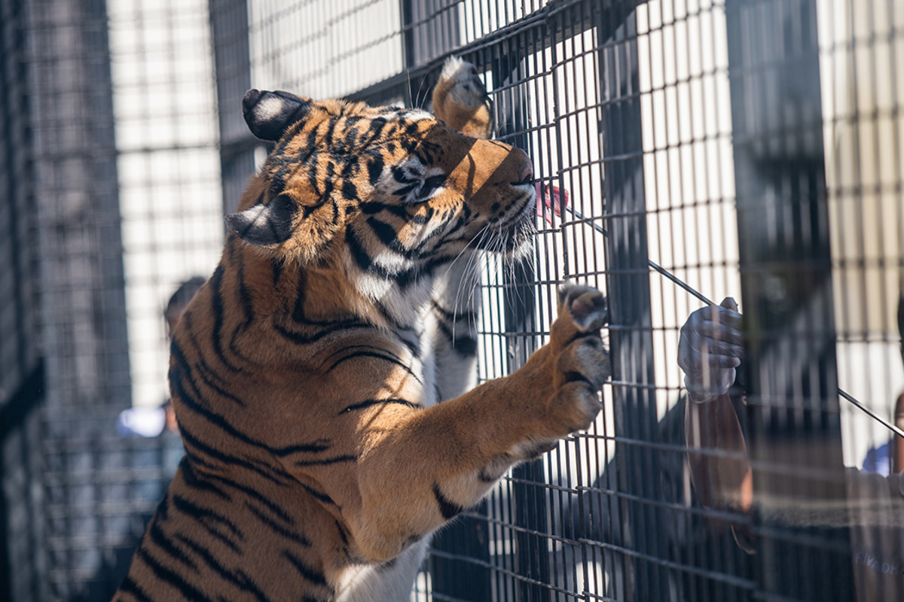
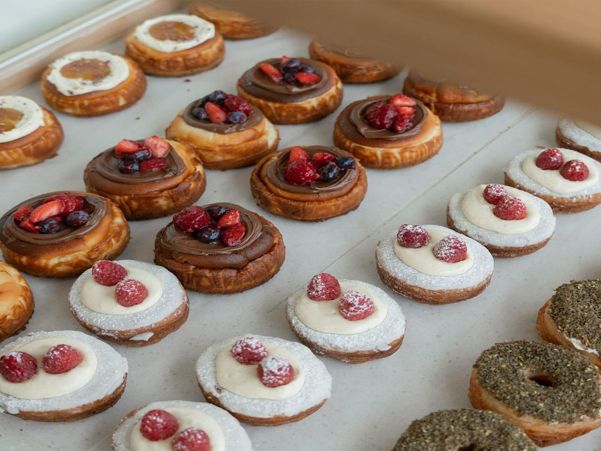
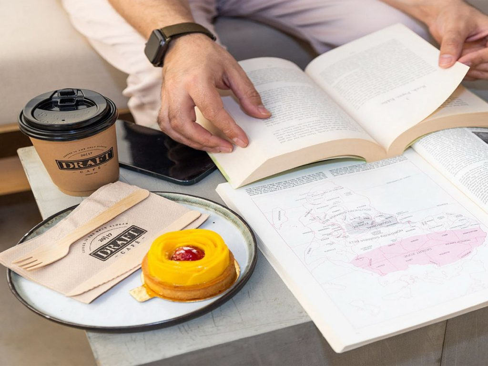

اكتشف الرياض
المعالم التاريخية
مركز الملك عبدالعزيز التاريخي
يعد مركز الملك عبدالعزيز التاريخي أحد أهم المعالم الحضارية والثقافية في العاصمة الرياض،يعكس تصميم مركز الملك عبدالعزيز التاريخي الهوية التراثية والثقافية والتاريخية لمدينة الرياض، كما تتلاءم منشآته مع النسيج المعماري والعمراني للمنطقة المحيطة، حيث يمثل هذا المشروع أحد برامج “الهيئة الملكية لمدينة الرياض ” التطويرية في منطقة وسط المدينة،والتي ابتدأتها الهيئة بتطوير منطقة قصر الحكم
قصر المربع
يتميز القصر ببناء مربع الشكل محاط بالأسوار، في تصوير وتجسيد لطبيعة المجتمع المحلي الذي يحافظ على خصوصية المنازل، وتوزعت فيه 32 غرفة على طابقين، بالإضافة لمجالس استقبال ضيوف الملك، ومكاتب إدارية لأعوانه وحراسه. استمتع باكتشاف ما تحتوي عليه الغرف في جولة تاريخية داخل القصر، من مقتنيات، وملبوسات، وصور تذكارية للملك مع أبنائه ومع عدد من قادة الدول. يمكنك الاستمتاع برحلة ممتعة. .
مدينة الدرعية
وهي أحد مواقع التراث العالمي التابعة لليونيسكو وواحدة من المعالم السياحية التي لابد من زيارتها عند زيارة الرياض، وتبعد مسافة 20 كم وتقع جنوب هضبة نجد وكانت هذه المدينة في الماضي موطن للعائلة الملكية السعودية والعاصمة الأولى للملكة العربية السعودية، عند ذهابك إلى المدينة ستجد العديد من المعالم الأثرية الرائعة ومن ضمنها المنازل الطينية الجميلة والتي تشهد على التاريخ العريق للمدينة.
قصر المصمك
يوجد قصر المصمك وسط مدينة الرياض، وهي عبارة عن قصر مصنوع من الطين والطوب اللبن ولقد لعب في الماضي دورا هاما في تاريخ المملكة العربية السعودية، واليوم تمثل هذا القصر واحد من أشهر المعالم السياحية في البلاد، وتحول هذا القصر القديم الذي استخدم في الماضي كحصن، إلى متحف يتضمن مجموعة متنوعة من القطع الأثرية والبنادق القديمة، والأزياء الشعبية التقليدية، ومجموعة من الأغراض الأخرى.
اكتشف الرياض
موسم الرياض
بوليڤارد سيتي

إنّ منطقة بوليفارد رياض سيتي، تعدّ واحدةً من أهم وجهات الموسم، والتي تقع في شمال الرياض، وهي مركز الترفيه الأكبر والمستدام في الموسم، إذ تضمّ الكثير من الفعاليات؛ وذلك لما تتمتّع به من حدائق ومقاهٍ، ومطاعم ومحلات لأشهر الماركات المحلية والعالمية الكائنة بمنطقة بوليفارد سكوير، بجانب احتوائها للمشهد الخلّاب للنافورة الراقصة. كذلك وتحوي منطقة جاردن هب على العديد من مطاعم الوجبات السريعة
وندر جاردن
مدينة ترفيهية مكونة من ٣ مناطق مليئة بالمتعة، حيث يمكن لزوارها الاستمتاع بمشاهدة طيور الفلامنجو، والفراشات الملونة والأشجار الخلابة في عالم أشبه ما يكون بالخيال! لا يسمح بالدخول بعد الساعه 11 مساءاً لأيام الأسبوع. لا يسمح بالدخول بعد الساعه 12 صباحاً لأيام نهاية الأسبوع.تميزت منطقة "وندر جاردن"، إحدى مناطق موسم الرياض بنسخته الرابعة، بطابعها الخيالي المستوحى من سحر الطبيعة.
حديقة الحيوان
رجعنا لكم بطاقة استيعابية أكبر، وجمعنا روائع الحياة البرية تحت سقف واحد، راح تستمتعون بتجارب مذهلة من خلال 6 مناطق فرعية، وراح تشوفون الحيوان المهدد بالانقراض، الباندا الأحمر، في واقع مثير للدهشة لأول مرة في منطقة الشرق الأوسط. . تأسست حديقة الحيوانات في عام 1987 والحين رجعت لنا بشكلها الجديد بأكثر من 1300 حيوان من 190 فصيلة في 6 مناطق محمية، بتجارب كثيرة بتوسع صدرك وتغيّر جوك في كل منطقة.
بوليڤارد وورلد

تمنح منطقة بوليڤارد وورلد زوارها متعة التعرّف على حضارات وثقاقات العالم، والتجوّل بين مرافقها الخيالية، بالإضافة إلى العديد من التجارب والمغامرات الاستثنائية في كل منطقة من مناطقها الفريدة بوليفارد وورلد او جادّة العالم هي إحدى المناطق الترفيهية التي أعلن عن افتتاحها رئيس مجلس إدارة الهيئة العامة للترفيه في المملكة العربية السعودية، تركي آل الشيخ ضمن مناطق موسم الرياض 2022، تجمع تجارب متنوعة لعدة دول.
اكتشف الرياض
المطاعم والكافيهات
كويا

إن كنتم تودون تناول أشهى الأطباق اللاتينية، اذهبوا إلى حيث يذهب الجميع إلى كويا. إنّه أفضل مطعم أمريكي لاتيني في الرياض وأحد أفضل مطاعم الرياض 2023. يتألق هذا المطعم بديكورات مستوحاة من حضارة الأزتك تجعلكم تلاحظونه على الفور عند مروركم بحي السليمانية النابض بالحيوية، من التفاصيل زاهية الألوان المنتشرة في كلّ مكان إلى شعار اللاما الموجود على كلّ طاولة. من قائمة الطعام المميزة والأجواء الحيوية إلى الأنغام الموسيقية الصادحة في أرجائه، كل هذا يجعل من كويا خياراً مثالياً لأمسية جميلة.
ميازو

إنّه أشهر مطعم في الرياض ودائماً ما يحتشد بالرواد من مقيمين وزوار. يقدّم ميازو تجربة استثنائية تجعله من دون شك أفضل مطعم في الرياض 2023. يتألق ميازو بتصميم أنيق وعصري، من الألوان الداكنة التي تسيطر على أرجائه إلى صالة الطعام المريحة والجميلة التي يتوسطها منصة خاصة لتحضير السوشي تمنحها طابعاً فريداً من نوعها. يقدم أفضل مطعم في الرياض 2023 قائمة طعام شهية تضم ما لذّ وطاب من المأكولات اليابانية، ويشتهر بمشاوي الروباتا وتشكيلة السوشي والكوكتيلات المبتكرة التي يبدعها.
مقهى تشوك
فتح أبوابه المقهى المميز تشوك في مجمع ذا اسبلاناد ليقدم القهوة المميزة وأصناف المخبوزات لأهل الرياض. يشتهر المقهى بمخبوزات الكرونت الإسبانية المميزة والتي يمكنكم تجربتها بعدة نكهات في مقهى تشوك في المركز المالي. ويتميز المخبز بأصناف الكرونت بحشوات مختلفة. جربوا كرونت الدولتشي دي ليشي، أو مع مزيج التوت الأحمر، كريمة اللوز، القرفة أو الدانيش الكلاسيكية، وإن كنتم في مزاج لمذاق مالح تقدم الكرونت بنكهات الجبنة واللبنة والزعتر. السبت – الخميس من 8:30 صباحاً إلى منتصف الليل، .
درافت كافيه
أحد أشهر كافيهات الرياض ويتواجد درافت كافيه الشهير بعدة فروع في العاصمة ولكن أجملها في عود سكوير محاطاً بالأشجار والمطاعم، ويجذب السكان والسياح لقهوته الشهيرة وأصناف الحلويات. يعد المكان المثالي للاسترخاء والاستكتاع بالقهوة مع كتاب أو مع الأصدقاء. السبت – الخميس. من 7 صباحاً إلى 11:30 ليلاً، الجمعة من 1 ظهراً إلى 11:30 ليلاً. عود سكوير، حي السفارات،